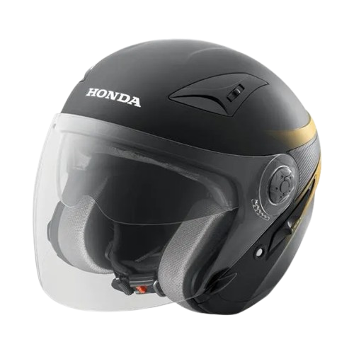
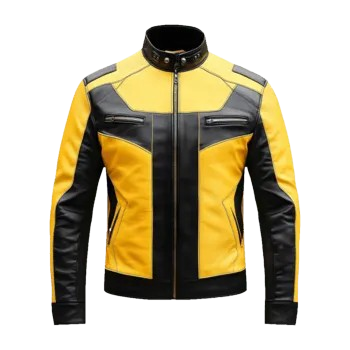

Dasar Hukum
& Pengertian
Lalu Lintas
UU No. 22 Tahun 2009
"Lalu Lintas dan Angkutan Jalan adalah satu kesatuan sistem yang terdiri atas Lalu Lintas, Angkutan Jalan, Jaringan, Prasarana, Kendaraan, Pengemudi, Pengguna Jalan, serta pengelolaannya."
Pengertian & Fungsi
Gerak kendaraan & orang di jalan. Mengatur pergerakan aman, tertib, lancar, dan efisien.
Unsur Lalu Lintas
Terdiri dari Manusia, Kendaraan, serta Jalan/Infrastruktur.

UU No. 22 / 2009
Tentang Lalu Lintas & Angkutan Jalan
Peraturan Pemerintah (PP)
Regulasi turunan resmi penunjang Undang-Undang Lalu Lintas.
Manajemen dan rekayasa lalu lintas, analisis dampak lalu lintas.
Forum Lalu Lintas dan Angkutan Jalan.
Kendaraan dan persyaratan teknis kelaikan jalan.
Jaringan lalu lintas dan angkutan jalan, termasuk batasan kecepatan.
Angkutan jalan secara komprehensif.
Peraturan Dasar &
Batas Kecepatan
Ketentuan wajib berdasarkan UU No. 22 Tahun 2009
Wajib memiliki SIM sesuai kendaraan (Usia min. SIM C 17 tahun) dan jalan wajib laik.
Wajib mengutamakan keselamatan pejalan kaki/pesepeda serta mematuhi rambu dan marka.
Aturan Batas Kecepatan (PP 79/2013)
Rambu dan Marka Jalan
Permenhub No. 13 & 34 Tahun 2014 — Klik kartu untuk melihat detail
Peringatan
Detail ▾Larangan
Detail ▾Perintah
Detail ▾Petunjuk
Detail ▾Garis Putus
Detail ▾Garis Utuh
Detail ▾Pilih salah satu kategori rambu di sebelah kiri
untuk melihat detail dan daftar rambu
Etika Berkendara
Prinsip dasar kesopanan dan keselamatan di jalan raya
Perilaku yang Baik
- Menggunakan helm SNI & membawa SIM/STNK lengkap
- Menyalakan lampu sein sebelum berbelok
- Berhenti saat lampu merah & beri jalan ambulans
- Menjaga jarak aman & batas kecepatan
Perilaku Tidak Beretika
- Menerobos lampu merah & melawan arus
- Menggunakan ponsel saat mengemudi
- Berkendara ugal-ugalan / di bawah pengaruh alkohol
- Tidak memakai helm / berboncengan melebihi kapasitas
Safety Riding & Perlengkapan
Standar perlindungan fisik pengendara roda dua

Helm SNI
Helm berstandar SNI dengan tali terkunci benar.

Jaket
Melindungi tubuh dari angin, panas, dan hujan.
Sarung Tangan
Cengkeraman lebih baik pada setang.
Celana Panjang
Lindungi kaki dari panas mesin dan goresan.
Sepatu Tertutup
Menutupi seluruh kaki untuk keseimbangan.

Jas Hujan
Model setelan agar tidak tersangkut roda.
Pengguna Jalan
yang Memiliki Prioritas
Kendaraan yang memperoleh hak utama untuk didahulukan di jalan raya secara berurutan:
Video Panduan
Tonton video panduan keselamatan berkendara secara visual untuk memahami penerapan aturan.
Tonton Sekarang